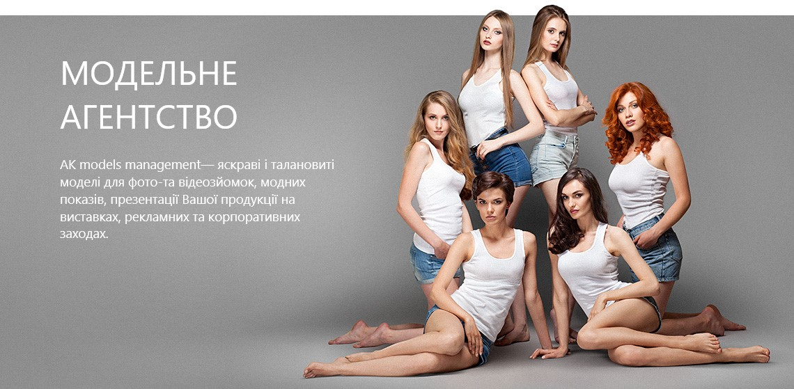

Агентство AKModelsManagement моделей було засноване у 2001 році.
2008 року агентство увійшло до рекламного холдингу Vitamin та зосередилось на роботі в рекламній сфері. Це дозволило нам добре вивчити специфіку рекламного ринку та краще зрозуміти потреби наших клієнтів. Сьогодні база нашого модельного агентства нараховує понад сотню професійних і талановитих моделей, які ретельно підібрані нашою командою.
Ми знаходимось у постійному пошуку нових облич по всій Україні.
Моделі AKModelsManagement успішно реалізовують свої професійні амбіції як в Україні, так і закордоном.
Ставши замовником AKModelsManagement, Ви отримаєте надійного партнера, для якого Ваші завдання, стануть нашими.
Ставши моделлю AKModelsManagement, Ви станете частиною професійної та дружньої команди, яка успішно представлятиме Ваші інтереси.